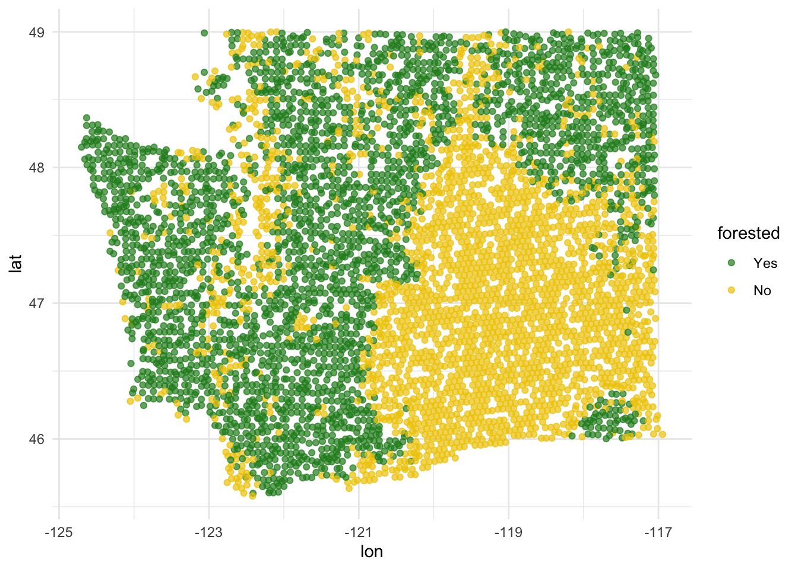

AE 15: Forest classification
In this application exercise, we will
- Split our data into testing and training
- Fit logistic regression regression models to testing data to classify outcomes
- Evaluate performance of models on testing data
We will use tidyverse and tidymodels for data exploration and modeling, respectively, and the forested package for the data.
Remember from the lecture that the forested dataset contains information on whether a plot is forested (Yes) or not (No) as well as numerical and categorical features of that plot.
glimpse(forested)Rows: 7,107
Columns: 19
$ forested <fct> Yes, Yes, No, Yes, Yes, Yes, Yes, Yes, Yes, Yes, Yes,…
$ year <dbl> 2005, 2005, 2005, 2005, 2005, 2005, 2005, 2005, 2005,…
$ elevation <dbl> 881, 113, 164, 299, 806, 736, 636, 224, 52, 2240, 104…
$ eastness <dbl> 90, -25, -84, 93, 47, -27, -48, -65, -62, -67, 96, -4…
$ northness <dbl> 43, 96, 53, 34, -88, -96, 87, -75, 78, -74, -26, 86, …
$ roughness <dbl> 63, 30, 13, 6, 35, 53, 3, 9, 42, 99, 51, 190, 95, 212…
$ tree_no_tree <fct> Tree, Tree, Tree, No tree, Tree, Tree, No tree, Tree,…
$ dew_temp <dbl> 0.04, 6.40, 6.06, 4.43, 1.06, 1.35, 1.42, 6.39, 6.50,…
$ precip_annual <dbl> 466, 1710, 1297, 2545, 609, 539, 702, 1195, 1312, 103…
$ temp_annual_mean <dbl> 6.42, 10.64, 10.07, 9.86, 7.72, 7.89, 7.61, 10.45, 10…
$ temp_annual_min <dbl> -8.32, 1.40, 0.19, -1.20, -5.98, -6.00, -5.76, 1.11, …
$ temp_annual_max <dbl> 12.91, 15.84, 14.42, 15.78, 13.84, 14.66, 14.23, 15.3…
$ temp_january_min <dbl> -0.08, 5.44, 5.72, 3.95, 1.60, 1.12, 0.99, 5.54, 6.20…
$ vapor_min <dbl> 78, 34, 49, 67, 114, 67, 67, 31, 60, 79, 172, 162, 70…
$ vapor_max <dbl> 1194, 938, 754, 1164, 1254, 1331, 1275, 944, 892, 549…
$ canopy_cover <dbl> 50, 79, 47, 42, 59, 36, 14, 27, 82, 12, 74, 66, 83, 6…
$ lon <dbl> -118.6865, -123.0825, -122.3468, -121.9144, -117.8841…
$ lat <dbl> 48.69537, 47.07991, 48.77132, 45.80776, 48.07396, 48.…
$ land_type <fct> Tree, Tree, Tree, Tree, Tree, Tree, Non-tree vegetati…Spending your data
Split your data into testing and training in a reproducible manner and display the split object.
set.seed(1234)
forested_split <- initial_split(forested)
forested_split<Training/Testing/Total>
<5330/1777/7107>Now, save your training and testing data as their own data frames.
forested_train <- training(forested_split)
forested_test <- testing(forested_split)Exploratory data analysis
Create some visualizations to explore the data! This can help you determine which predictors you want to include in your model.
Note: Pay attention to which dataset you use for your exploration.
This is a plot that explores latitude and longitude - it’s different from anything we have seen so far!
ggplot(forested_train, aes(x = lon, y = lat, color = forested)) +
geom_point(alpha = 0.7) +
scale_color_manual(values = c("Yes" = "forestgreen", "No" = "gold2")) +
theme_minimal()
# add some other plots here!Model 1: Custom choice of predictors
Fit
Fit a model for classifying plots as forested or not based on a subset of predictors of your choice. Name the model forested_custom_fit and display a tidy output of the model.
forested_custom_fit <- logistic_reg() |>
fit(_____ ~ ____________,
data = __________)
tidy(forested_custom_fit)Predict
Predict for the testing data using this model.
forested_custom_aug <- _________(forested_custom_fit, new_data = _______)
forested_custom_augEvaluate
Calculate the false positive and false negative rates for the testing data using this model.
forested_custom_aug |>
count(.pred_class, forested) |>
arrange(forested) |>
group_by(forested) |>
mutate(
p = round(n / sum(n), 2),
decision = case_when(
.pred_class == "Yes" & forested == "Yes" ~ "True positive",
.pred_class == "Yes" & forested == "No" ~ "False positive",
.pred_class == "No" & forested == "Yes" ~ "False negative",
.pred_class == "No" & forested == "No" ~ "True negative"
)
)Another commonly used display of this information is a confusion matrix. Create this using the conf_mat() function.
conf_mat(
forested_custom_aug,
truth = forested,
estimate = .pred_class
)Sensitivity, specificity, ROC curve
Calculate sensitivity and specificity and draw the ROC curve.
forested_custom_roc <- roc_curve(forested_custom_aug,
truth = ____, # column with truth
_____, # column with y = 1 preds
event_level = _____) # factor level for y = 1
forested_custom_rocggplot(forested_custom_roc, aes(x = 1 - ______, y = ______)) +
geom_path() + # draws line
geom_abline(lty = 3) + # x = y line
coord_equal() # makes squareModel 2: All predictors
Fit
Fit a model for classifying plots as forested or not based on all predictors available. Name the model forested_full_fit and display a tidy output of the model.
forested_full_fit <- logistic_reg() |>
fit(_________ ~ ________, data = _________)
tidy(forested_full_fit)Predict
Predict for the testing data using this model.
forested_full_aug <- augment(____________, new_data = ________)
forested_full_augEvaluate
Calculate the false positive and false negative rates for the testing data using this model.
forested_full_aug |>
count(.pred_class, forested) |>
arrange(forested) |>
group_by(forested) |>
mutate(
p = round(n / sum(n), 2),
decision = case_when(
.pred_class == "Yes" & forested == "Yes" ~ "True positive",
.pred_class == "Yes" & forested == "No" ~ "False positive",
.pred_class == "No" & forested == "Yes" ~ "False negative",
.pred_class == "No" & forested == "No" ~ "True negative"
)
)Sensitivity, specificity, ROC curve
Calculate sensitivity and specificity and draw the ROC curve.
forested_full_roc <- roc_curve(forested_full_aug,
truth = ____, # column with truth
_____, # column with y = 1 preds
event_level = _____ # factor level for y = 1
)
forested_full_rocggplot(forested_full_roc, aes(x = 1 - _______, y = ______)) +
geom_path() + # draws line
geom_abline(lty = 3) + # x = y line
coord_equal() #makes plot squareModel 1 vs. Model 2
lot both ROC curves and articulate how you would use them to compare these models.
First, add a column to each roc data.
Next, combine data.
roc_combined <- bind_rows(forested_custom_roc, forested_full_roc) Now, plot!
___________ |>
ggplot(aes(x = 1 - specificity, y = sensitivity, color = model)) +
geom_path() + # draws line
geom_abline(lty = 3) + # adds x = y line
coord_equal() # makes squareThe full model looks better. We can quantify this comparison with the area under the curve:
# same as roc_curve, but roc_auc
full_roc_auc <- _______ (
forested_full_aug,
truth = forested,
.pred_Yes,
event_level = "first"
)
# same as roc_curve, but roc_auc
custom_roc_auc <- _______ (
forested_custom_aug,
truth = forested,
.pred_Yes,
event_level = "first"
)
full_roc_auc
custom_roc_auc